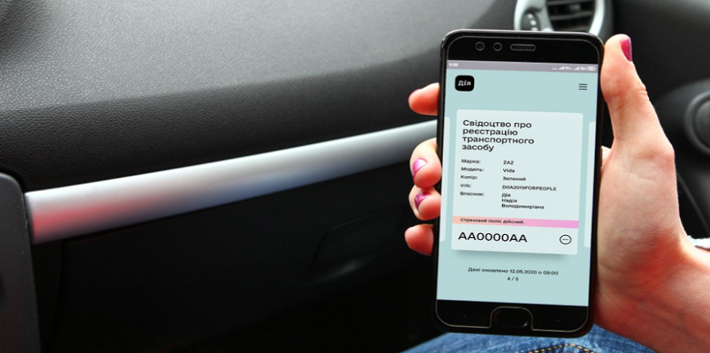

Чому автоцивілка не відображається в ДІЇ?
У цій статті ви знайдете:
- Причини, чому автоцивілка може не відображатися в Дії.
- Що робити, якщо ваш поліс не з'явився в Дії.
- Як перевірити дійсність автоцивілки.
- Рекомендації щодо вибору та оформлення автоцивілки.
Чому автоцивілка не завжди відображається в Дії?
-
Оновлення бази даних
Інформація в Дії оновлюється раз на добу, тому ваш поліс може з'явитися не одразу.
-
Не всі поліси потрапляють до бази
Дія показує лише ті поліси, які зареєстровані в МТСБУ. В застосунку поліс страхування відображається у власника та належного користувача автомобіля.
-
Технічні помилки
Іноді через технічні проблеми поліс не відображається в Дії.
Що робити, якщо автоцивілки немає в Дії?
-
Перевірте дані:
Переконайтеся, що номерний знак та інші дані в полісі та техпаспорті введені правильно.
-
Зверніться до МТСБУ:
Перевірте чинність поліса в базі МТСБУ Дія бере інформацію про ваш поліс саме звідси
Так, навіть якщо автоцивілки немає в Дії, вона дійсна, якщо:
-
Поліс правильно оформлений та зареєстрований в МТСБУ.
-
Ви звернулись на гарячу лінію страхової компанії і вам підтвердили що поліс діючий